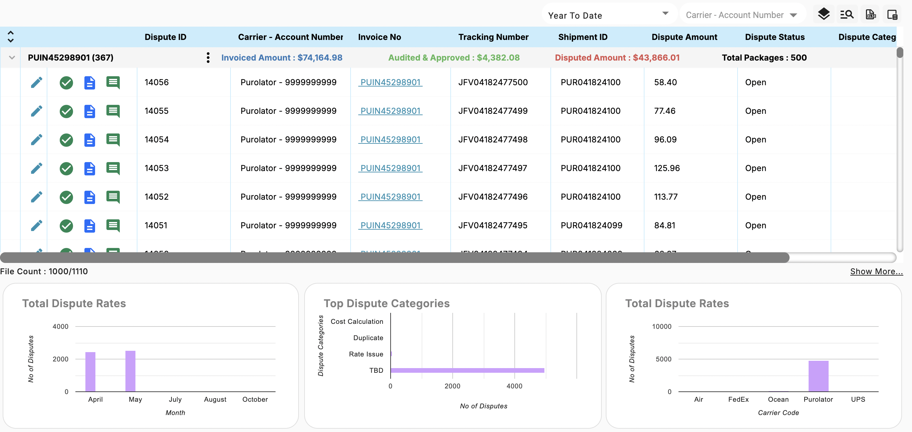

Audit Cube - Dispute Dashboard
Overview
The Dispute Dashboard in Audit Cube is a dedicated workspace for managing and resolving disputes on invoices associated with shipments. Unlike other dashboards, the Dispute Dashboard provides tools to review, track, and resolve disputes in real-time. This feature is designed for financial and logistics teams to efficiently handle discrepancies between invoiced amounts and approved charges. With options to manually approve disputes, access detailed audit results, track changes, and filter views, the Dispute Dashboard facilitates a streamlined dispute resolution process.
Table Overview
The dashboard displays dispute-related data in a table format with key columns such as:
- Dispute ID
- Carrier - Account Number
- Invoice Number
- Tracking Number
- Shipment ID
- Dispute Amount
- Dispute Status
Rows are expandable by clicking the arrow next to an invoice number, revealing additional actions and data related to the invoice.
Self-Help Actions
Approving and Resolving Disputes
Clicking the green check icon under an invoice allows users to manually approve the invoice. Once approved, the previously disputed invoice is marked as resolved, and the dashboard status will reflect this change.
Viewing Audit Results
Select the blue paper icon to open the Audit Results pop-up. This view provides an in-depth look at the audit details for the selected invoice, offering insights into any discrepancies or findings that have led to the dispute.
Utilizing the Audit Trail
The green comment icon opens the Audit Trail, where users can add or view comments, update the status, and track ongoing actions. This feature ensures that all updates and changes to the dispute are logged, providing a clear record of the dispute’s history and any decisions made.
KPIs
- File Count: Displays the total number of disputes and the number currently being viewed based on applied filters.
- Total Dispute Rates by Month: A bar chart visualizing the number of disputes per month. Helps identify seasonal patterns or spikes in disputes.
- Top Dispute Categories: A bar chart showing the most common dispute categories (e.g., Cost Calculation, Duplicate, Rate Issue). Useful for identifying recurring issues that may need systemic resolution.
- Total Dispute Rates by Carrier Code: Highlights which carriers (e.g., FedEx, UPS) have the highest dispute rates. Helps identify potential carrier-specific issues or opportunities for improvement.

Troubleshooting Tips
1. Data Not Loading Properly
Issue: Table data or KPIs fail to load.
Solution:
- Ensure your internet connection is stable.
- Refresh the page using your browser’s refresh button or Ctrl + R.
- Clear your browser cache and cookies, then reload the dashboard.
- Verify if the export functionality or other tools (like column configuration) are functioning. If not, contact technical support.
2. Export Functionality Not Working
Issue: Unable to export the dispute data to Excel.
Solution:
- Confirm that you have the necessary permissions to export data.
- Ensure all data is loaded before attempting export.
- Try exporting smaller data sets by applying filters to reduce the volume.
3. Filters Not Applying
Issue: Filters for sorting disputes by status, category, or other criteria don’t work as expected.
Solution:
- Check if the dropdown menus are visible and operational.
- Ensure no conflicting filters are applied simultaneously.
- Clear all filters using the reset option and apply one filter at a time.
4. Icons Not Responding
Issue: The green check, blue paper, or green comment icons don’t respond when clicked.
Solution:
- Verify if your browser has pop-ups enabled; some actions may require pop-up windows.
- Refresh the page or try accessing the feature from another browser or device.
5. KPI Charts Not Displaying
Issue: KPI visualizations for dispute rates or top categories are blank or incorrect.
Solution:
- Confirm that the page has fully loaded.
- Check if filters are hiding data. Adjust or remove filters to broaden the data view.
- Verify the data source is correctly updated by ensuring recent disputes or approvals are logged.
6. Slow Dashboard Performance
Issue: Dashboard is slow to respond or freezes.
Solution:
- Limit the number of rows displayed by collapsing rows or viewing fewer columns.
- Close unnecessary browser tabs or restart the browser to free up memory.